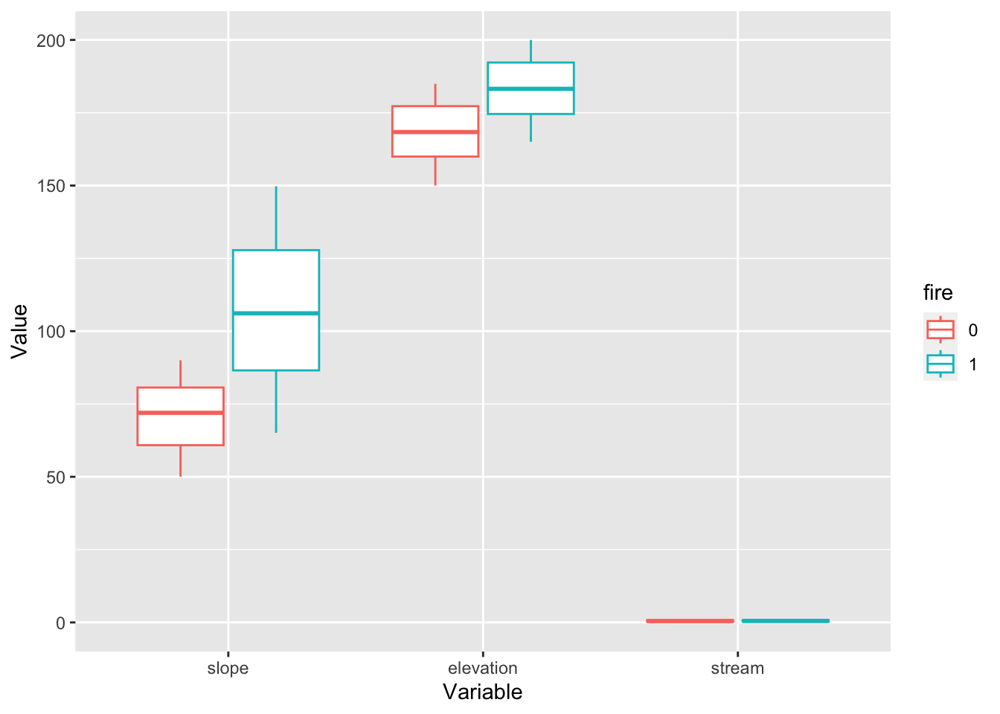

Code to demonstrate matching in R. Adapted from the supplementary materials from Butsic, V. et al. (2017): Quasi-experimental methods enable stronger inferences from observational data in ecology. (c) Matthias Baumann (2017-01-10).
In the Butsic et al. paper, they used the example of the impact of wildfire on species richness. Here, we will simulate data with a known treatment effect of fire on species richness. We will then compare the estimated effect we get through a naive ordinary least squares (OLS) regression approach to the effect we estimate when we use matching methods to control for observable confounding variables.
Set up
Load required packages. In this demo, we will use the package “MatchIt” for the matching process.
Simulate data
Simulated data is handy because we know the true effect of the treatment variable. Here, we’ll write a function to simulate a dataset where we know the true effect of fire on species richness.
Code
### Function to simulate data and write it as a dataframesimulate_data <-function(){### Create variables in a dataframe### Make column for observation ID df <-data.frame(id =seq(1,1000),### Add columns for explanatory variables### Add column for treatment variablefire =c(rep(0,500), rep(1,500)),### And the rest of the covariatesslope =c(runif(500, min =50, max =90), runif(500, min =65, max =150)),elevation =c(runif(500, min =150, max =185), runif(500, min =165, max =200)),stream =runif(1000, min =0, max =1),### And the error termerror =rnorm(1000, mean =0, sd =5))### Add a slope*slope variable df <- df %>%mutate(slope2 = slope^2)### Make column for outcome variable (species richness) df <- df %>%mutate(species_richness =1+5*fire +0.07*slope +0.05*elevation +2*stream -0.005*slope2 + error)return(df)}
We know that the true effect of the treatment variable (fire) is a 5x increase in the response variable (species richness).
Estimate the effect using ordinary least squares
Code
### Write a function to generate data and analyze using OLS ols_fun <-function(){### Simulate the dataset data <-simulate_data()### Run OLS regression ols <-lm(species_richness ~ fire + slope + elevation + stream, data = data)### Extract model coefficients and standard error fire_coeff <-coef(summary(ols))["fire", "Estimate"] fire_se <-coef(summary(ols))["fire", "Std. Error"] list <-list(fire_coeff, fire_se)}### Apply the function to 100 replicatesols_sim <-replicate(100, ols_fun())### Extract the model estimatesols_fire_est <-unlist(ols_sim[1, ])### Print mean, standard deviation, minimum, and maximum values for coefficient estimatesc(mean(ols_fire_est), sd(ols_fire_est), min(ols_fire_est), max(ols_fire_est))
[1] 7.0279435 0.6065381 5.6262475 8.3778838
Code
### Extract the standard deviationsols_fire_sd <-unlist(ols_sim[2, ])### Print mean, standard deviation, minimum, and maximum standard deviation of coefficient estimatesc(mean(ols_fire_sd), sd(ols_fire_sd), min(ols_fire_sd), max(ols_fire_sd))
[1] 0.60583817 0.01842916 0.56454731 0.64972060
The effect estimated by OLS is incorrect– it should be 5.
Use pre-regression matching, then run the regression
Code
### Write a function to generate the data, use matching to subset the data, and run a regression on the matched datapps_fun <-function(){### Simulate the dataset data <-simulate_data()### Match the data on the observed covariates match <-matchit(fire ~ slope + elevation + stream, ### set method to use for matchingmethod ="nearest", ### tell it what data source to draw matches fromdata = data, ### tell it to use logistic regression for the matchingdistance ="glm", link ="probit",### specify which order to draw potential points from the full datasetm.order ="random",### set a maximum distance for the matchescaliper =0.10)### Extract the matched data from the full dataset matched_data =match.data(match)### Run OLS on the matched dataset ols <-lm(species_richness ~ fire + slope + elevation + stream, data = matched_data)### Extract model coefficients fire_coeff <-coef(summary(ols))["fire", "Estimate"] fire_se <-coef(summary(ols))["fire", "Std. Error"] list <-list(fire_coeff, fire_se) }### Apply the function to 100 replicatespps_sim <-replicate(100, pps_fun())### Extract the model estimatespps_fire_est <-unlist(pps_sim[1,])### Print mean, standard deviation, minimum, and maximum values for coefficient estimatesc(mean(pps_fire_est), sd(pps_fire_est), min(pps_fire_est), max(pps_fire_est))
[1] 4.8386337 0.7223976 3.5179257 6.8933651
Code
### Extract the standard deviationspps_fire_sd <-unlist(pps_sim[2,])### Print mean, standard deviation, minimum, and maximum standard deviation of coefficient estimatesc(mean(pps_fire_sd), sd(pps_fire_sd), min(pps_fire_sd), max(pps_fire_sd))
[1] 0.67701326 0.04671819 0.55414637 0.80191143
Take a closer look at the matching process
Pre-matching data
Code
### Simulate a datasetdata_for_match <-simulate_data()### Make fire a factor variabledata_for_match <- data_for_match %>%mutate_at(vars(fire), funs(factor))
Warning: `funs()` was deprecated in dplyr 0.8.0.
ℹ Please use a list of either functions or lambdas:
# Simple named list: list(mean = mean, median = median)
# Auto named with `tibble::lst()`: tibble::lst(mean, median)
# Using lambdas list(~ mean(., trim = .2), ~ median(., na.rm = TRUE))
Code
### Take a look at the balance of the covariates before matchingdata_for_match %>% dplyr::select(id, fire, slope, elevation, stream) %>%gather(variable, value, slope:stream, factor_key =TRUE) %>%ggplot(aes(x = variable, y = value, color = fire)) +geom_boxplot() +xlab("Variable") +ylab("Value")

Code
### fires: 0 = unburned, 1 = burned### You can also look at it in table formcovariate_summ <- data_for_match %>%group_by(fire) %>%summarise(slope_mean =mean(slope),slope_sd =sd(slope),elevation_mean =mean(elevation),elevation_sd =sd(elevation),stream_mean =mean(stream),stream_sd =sd(stream))
We can see that there are issues with the balance between the burned and unburned sample units. The burned areas are on steeper slopes and higher elevations, on average.
Match the data
Code
### Match the data on the observed covariatesmatch <-matchit(fire ~ slope + elevation + stream, ### set method to use for matchingmethod ="nearest", ### tell it what data source to draw matches fromdata = data_for_match, ### tell it to use logistic regression for calculating the propensity scores distance ="glm", link ="probit",### specify which order to draw potential points from the full datasetm.order ="random",### set a maximum distance for the matchescaliper =0.10)### Take a look at the quality of the matchesmatch_quality <-summary(match, standardize =TRUE)### Let's see how many points were matchedmatch_quality_nn <-as.data.frame(match_quality$nn)### Let's look at the pre-match covariate balancematch_quality_unmatched <-as.data.frame(match_quality$sum.all)### What does the covariate balance look like after matching?match_quality_summary <-as.data.frame(match_quality$sum.matched)### Ideally, you want the standardized mean differences in the matched dataset to be < 0.25 (reference: Schleicher et al. 2020. Statistical matching for conservation science. Conserv. Biol. 34:538–549. https://doi.org/10.1111/cobi.13448).### You can also look at the amount of bias *reduction achieved through matching# match_quality_reduction <- as.data.frame(match_quality$reduction)
Visualizing the match quality
Code
### You can also use a fun interactive command to visualize the pre- and post-match covariate spread# plot(match, interactive = FALSE)### And you can compare the propensity scores visually# plot(match, type = "jitter", interactive = FALSE)
Analyzing the matched subset of data
Code
### First, extract the matches from the full datasetdemo_matched <-match.data(match)### Then run the regression, including the covariates in the modelfit_matched <-lm(species_richness ~ fire + slope + elevation + stream, data = demo_matched)
Source Code
---title: "Matching in R"author: "Katherine Siegel"date: "2023-02-16"output: html_document---## DescriptionCode to demonstrate matching in R. Adapted from the supplementary materials from Butsic, V. et al. (2017): Quasi-experimental methods enable stronger inferences from observational data in ecology. (c) Matthias Baumann (2017-01-10). In the Butsic et al. paper, they used the example of the impact of wildfire on species richness. Here, we will simulate data with a known treatment effect of fire on species richness. We will then compare the estimated effect we get through a naive ordinary least squares (OLS) regression approach to the effect we estimate when we use matching methods to control for observable confounding variables.## Set upLoad required packages. In this demo, we will use the package "MatchIt" for the matching process.```{r setup, include=FALSE}knitr::opts_chunk$set(echo = TRUE)### Install MatchIt if you need toinstall.packages("MatchIt", repos = "http://cran.us.r-project.org")### Packages for the purposes of the quarto website (no need to download these to run the example)# install.packages(c("jsonlite", "rmarkdown"),# repos = "http://cran.us.r-project.org")### Load librarieslibrary(tidyverse)library(MatchIt)```## Simulate dataSimulated data is handy because we know the true effect of the treatment variable. Here, we'll write a function to simulate a dataset where we know the true effect of fire on species richness.```{r}### Function to simulate data and write it as a dataframesimulate_data <-function(){### Create variables in a dataframe### Make column for observation ID df <-data.frame(id =seq(1,1000),### Add columns for explanatory variables### Add column for treatment variablefire =c(rep(0,500), rep(1,500)),### And the rest of the covariatesslope =c(runif(500, min =50, max =90), runif(500, min =65, max =150)),elevation =c(runif(500, min =150, max =185), runif(500, min =165, max =200)),stream =runif(1000, min =0, max =1),### And the error termerror =rnorm(1000, mean =0, sd =5))### Add a slope*slope variable df <- df %>%mutate(slope2 = slope^2)### Make column for outcome variable (species richness) df <- df %>%mutate(species_richness =1+5*fire +0.07*slope +0.05*elevation +2*stream -0.005*slope2 + error)return(df)}```*We know that the true effect of the treatment variable (fire) is a 5x increase in the response variable (species richness).*## Estimate the effect using ordinary least squares```{r}### Write a function to generate data and analyze using OLS ols_fun <-function(){### Simulate the dataset data <-simulate_data()### Run OLS regression ols <-lm(species_richness ~ fire + slope + elevation + stream, data = data)### Extract model coefficients and standard error fire_coeff <-coef(summary(ols))["fire", "Estimate"] fire_se <-coef(summary(ols))["fire", "Std. Error"] list <-list(fire_coeff, fire_se)}### Apply the function to 100 replicatesols_sim <-replicate(100, ols_fun())### Extract the model estimatesols_fire_est <-unlist(ols_sim[1, ])### Print mean, standard deviation, minimum, and maximum values for coefficient estimatesc(mean(ols_fire_est), sd(ols_fire_est), min(ols_fire_est), max(ols_fire_est))### Extract the standard deviationsols_fire_sd <-unlist(ols_sim[2, ])### Print mean, standard deviation, minimum, and maximum standard deviation of coefficient estimatesc(mean(ols_fire_sd), sd(ols_fire_sd), min(ols_fire_sd), max(ols_fire_sd))```*The effect estimated by OLS is incorrect-- it should be 5.*## Use pre-regression matching, then run the regression```{r}### Write a function to generate the data, use matching to subset the data, and run a regression on the matched datapps_fun <-function(){### Simulate the dataset data <-simulate_data()### Match the data on the observed covariates match <-matchit(fire ~ slope + elevation + stream, ### set method to use for matchingmethod ="nearest", ### tell it what data source to draw matches fromdata = data, ### tell it to use logistic regression for the matchingdistance ="glm", link ="probit",### specify which order to draw potential points from the full datasetm.order ="random",### set a maximum distance for the matchescaliper =0.10)### Extract the matched data from the full dataset matched_data =match.data(match)### Run OLS on the matched dataset ols <-lm(species_richness ~ fire + slope + elevation + stream, data = matched_data)### Extract model coefficients fire_coeff <-coef(summary(ols))["fire", "Estimate"] fire_se <-coef(summary(ols))["fire", "Std. Error"] list <-list(fire_coeff, fire_se) }### Apply the function to 100 replicatespps_sim <-replicate(100, pps_fun())### Extract the model estimatespps_fire_est <-unlist(pps_sim[1,])### Print mean, standard deviation, minimum, and maximum values for coefficient estimatesc(mean(pps_fire_est), sd(pps_fire_est), min(pps_fire_est), max(pps_fire_est))### Extract the standard deviationspps_fire_sd <-unlist(pps_sim[2,])### Print mean, standard deviation, minimum, and maximum standard deviation of coefficient estimatesc(mean(pps_fire_sd), sd(pps_fire_sd), min(pps_fire_sd), max(pps_fire_sd))```## Take a closer look at the matching process### Pre-matching data```{r}### Simulate a datasetdata_for_match <-simulate_data()### Make fire a factor variabledata_for_match <- data_for_match %>%mutate_at(vars(fire), funs(factor))### Take a look at the balance of the covariates before matchingdata_for_match %>% dplyr::select(id, fire, slope, elevation, stream) %>%gather(variable, value, slope:stream, factor_key =TRUE) %>%ggplot(aes(x = variable, y = value, color = fire)) +geom_boxplot() +xlab("Variable") +ylab("Value")### fires: 0 = unburned, 1 = burned### You can also look at it in table formcovariate_summ <- data_for_match %>%group_by(fire) %>%summarise(slope_mean =mean(slope),slope_sd =sd(slope),elevation_mean =mean(elevation),elevation_sd =sd(elevation),stream_mean =mean(stream),stream_sd =sd(stream))```We can see that there are issues with the balance between the burned and unburned sample units. The burned areas are on steeper slopes and higher elevations, on average.### Match the data```{r}### Match the data on the observed covariatesmatch <-matchit(fire ~ slope + elevation + stream, ### set method to use for matchingmethod ="nearest", ### tell it what data source to draw matches fromdata = data_for_match, ### tell it to use logistic regression for calculating the propensity scores distance ="glm", link ="probit",### specify which order to draw potential points from the full datasetm.order ="random",### set a maximum distance for the matchescaliper =0.10)### Take a look at the quality of the matchesmatch_quality <-summary(match, standardize =TRUE)### Let's see how many points were matchedmatch_quality_nn <-as.data.frame(match_quality$nn)### Let's look at the pre-match covariate balancematch_quality_unmatched <-as.data.frame(match_quality$sum.all)### What does the covariate balance look like after matching?match_quality_summary <-as.data.frame(match_quality$sum.matched)### Ideally, you want the standardized mean differences in the matched dataset to be < 0.25 (reference: Schleicher et al. 2020. Statistical matching for conservation science. Conserv. Biol. 34:538–549. https://doi.org/10.1111/cobi.13448).### You can also look at the amount of bias *reduction achieved through matching# match_quality_reduction <- as.data.frame(match_quality$reduction)```#### Visualizing the match quality```{r}### You can also use a fun interactive command to visualize the pre- and post-match covariate spread# plot(match, interactive = FALSE)### And you can compare the propensity scores visually# plot(match, type = "jitter", interactive = FALSE)```### Analyzing the matched subset of data```{r}### First, extract the matches from the full datasetdemo_matched <-match.data(match)### Then run the regression, including the covariates in the modelfit_matched <-lm(species_richness ~ fire + slope + elevation + stream, data = demo_matched)```